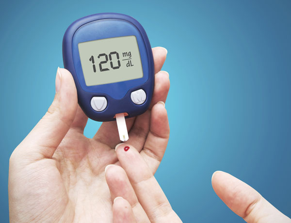
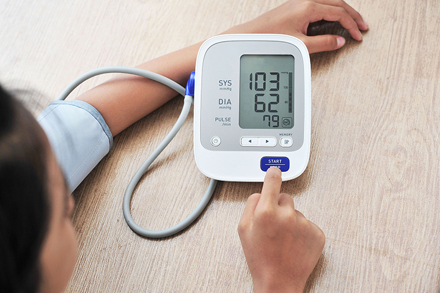

Medir la Glucosa
- Se necesita un glucómetro o medidor de glucosa, lancetas y tiras reactivas de glucosa. Estas suponen un método muy eficaz para conocer el nivel de glucosa.
- Tienes que pincharte el dedo de la mano, en la zona de la yema del dedo más próxima a la uña (previamente lavada con agua y jabón), con la lanceta para extraer una gota de sangre.Posteriormente colocas la muestra de sangre en una tira reactiva y, a través del glucómetro, podrás ver tus resultados.
-

Medir la Presión
- Colóquese el manguito sobre el brazo descubierto y siéntese con la espalda erguida y apoyada, los pies planos sobre el suelo y el brazo apoyado al nivel del corazón. Asegúrese que el extremo inferior del manguito quede directamente por arriba del doblez del codo. Relájese unos cinco minutos antes de medirse la presión. Resista el impulso de hablar o mirar un teléfono celular.
-

Temperatura
- Casi siempre se sugieren los termómetros electrónicos.
- La boca: coloque el bulbo bajo la lengua y cierre la boca. Utilice los labios para mantener el termómetro bien fijo en su lugar. Deje el termómetro en la boca por 3 minutos o hasta que el dispositivo pite.
- La axila: coloque el termómetro en la axila. Presione el brazo contra el cuerpo. Espere 5 minutos antes de leerlo.
-

Desangrado
- Aplique presión en la herida con una gasa estéril o algún material absorbente para detener la hemorragia o disminuir la perdida de sangre.
- Si la herida es severa, recuerde llamar a emergencias 911 o pida que alguien más lo haga. Mientras llegue la ayuda, mantenga presionada la herida.
-